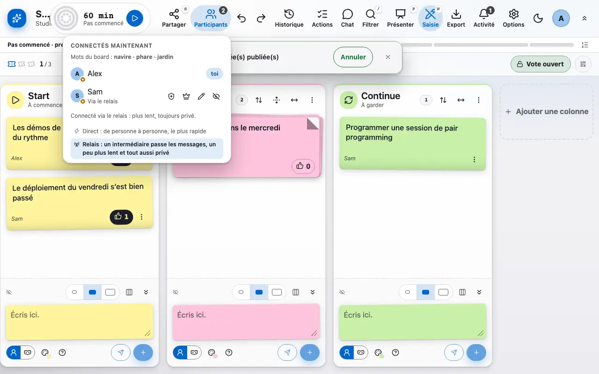
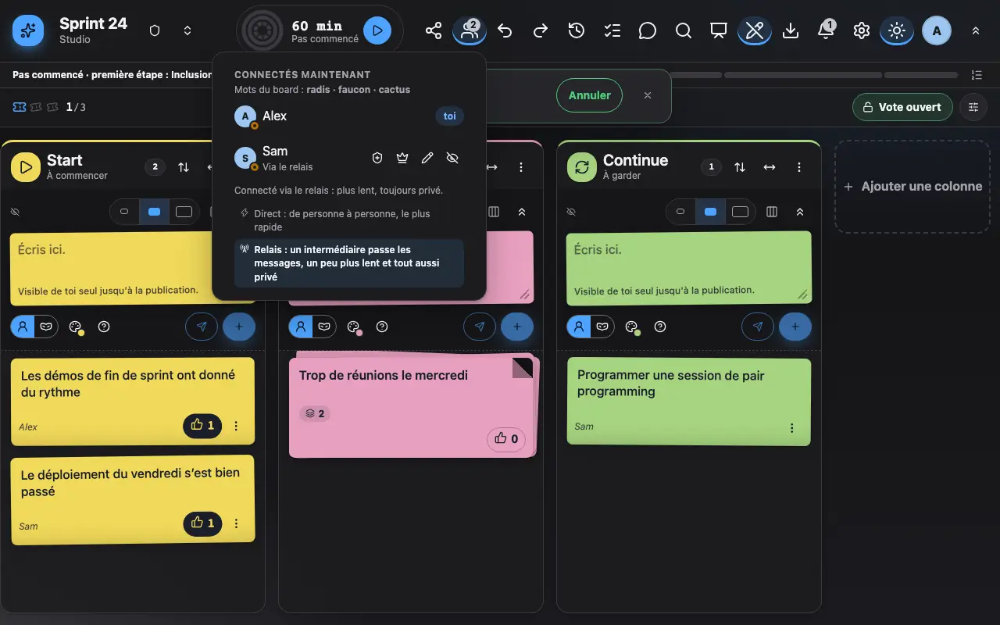
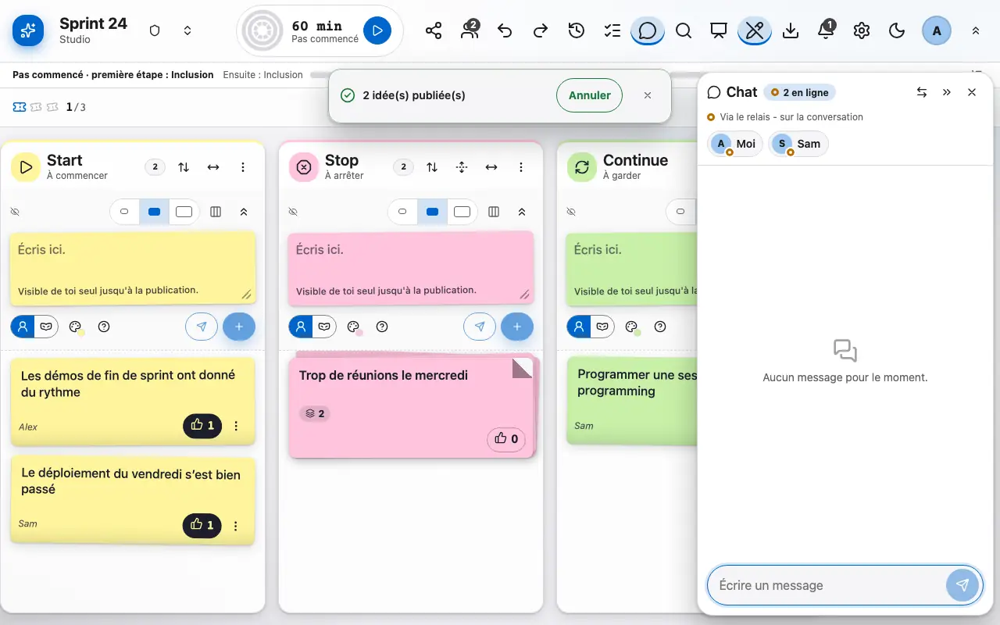
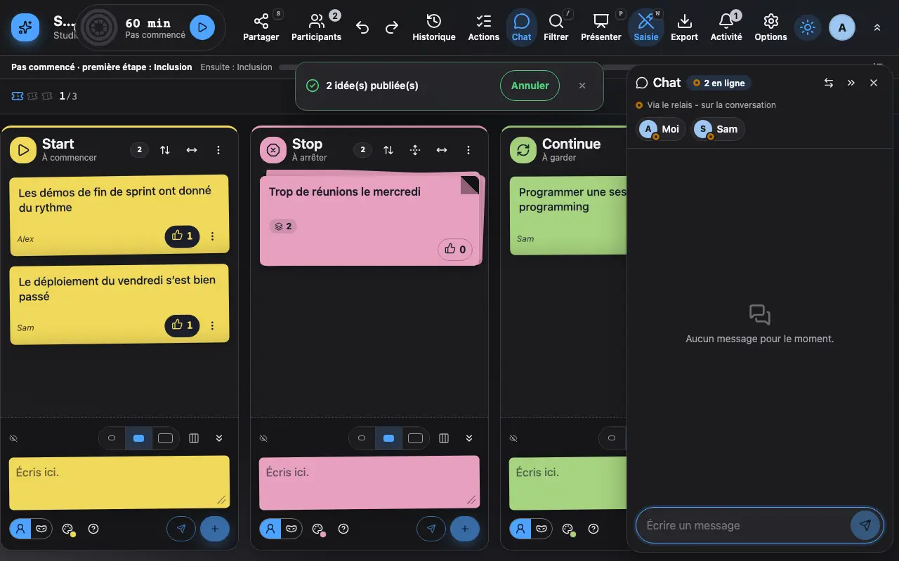

Les participants et le chat
Qui est là, qui écrit, et un chat pour se parler sans quitter le board.
1 La liste des participants indique qui est connecté et son rôle.
La liste des participants indique qui est connecté, qui écrit en ce moment et dans quelle colonne, et le rôle de chacun. Par défaut tout le monde peut animer; les options permettent de ne garder qu'un facilitateur.
L'animateur peut renommer un participant, masquer ses nouvelles notes ou le retirer. La personne retirée quitte le board et voit une page qui le lui dit. Comme quiconque a encore le lien pourrait lire la suite, le retrait propose Déplacer l'équipe vers un nouveau lien : une nouvelle salle et une nouvelle clé sont créées, le board est conservé tel quel (notes, auteurs, votes) et chaque personne présente reçoit le nouveau lien, scellé pour elle, et arrive seule sur le nouveau board. La personne retirée ne le reçoit jamais et l'ancien lien n'ouvre aucun board. Les personnes absentes pendant le déplacement ne reçoivent pas le lien : envoie-le leur avec Partager.


2 Le chat du board est chiffré comme le reste.
Le chat du board permet de se parler sans quitter la rétro. Comme le reste, il est chiffré et disparaît avec le board.

